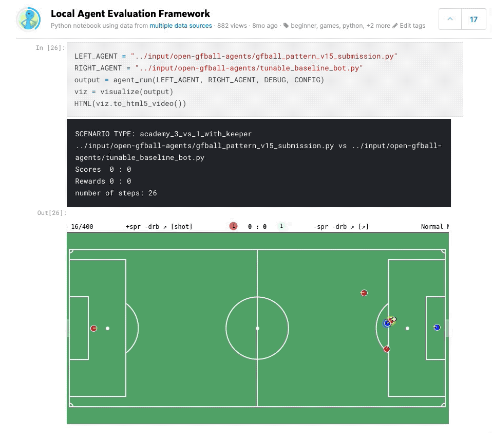

Google Research Football with Manchester City F.C.
Overview
Entry for the Google Research Football with Manchester City F.C. Kaggle simulation competition. The project includes a Dockerized development environment for the Google Research Football simulator, agent implementations, and analysis notebooks.
Local Agent Play Framework
I built a framework for pool play simulation matches between different agents and published it as a notebook on Kaggle.

Repository Structure
- Docker environment for the Kaggle + Google Football simulation, with Jupyter notebook support
- Agent implementations and ML agent exploration
- Analysis notebooks for match simulation and evaluation